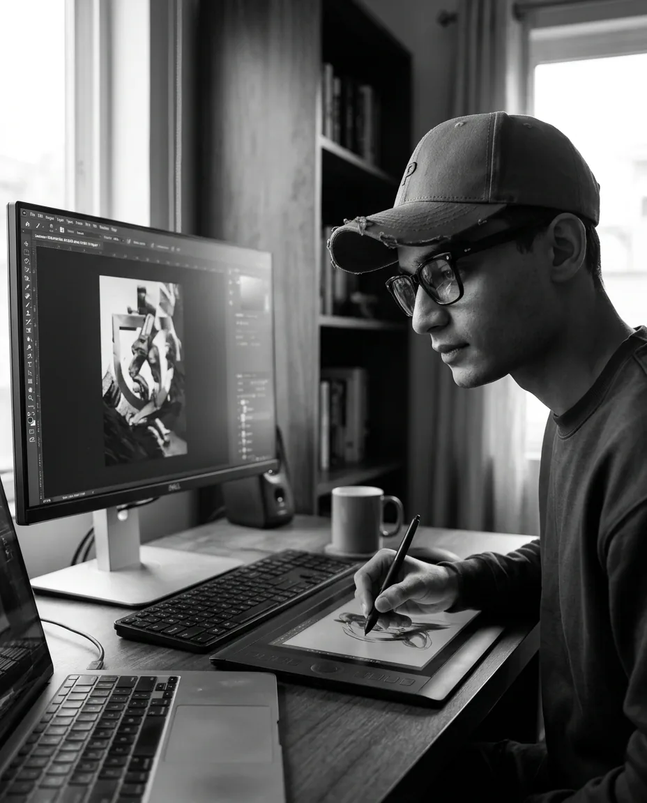
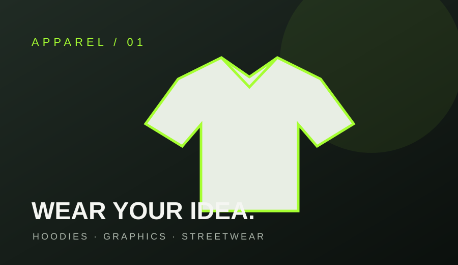
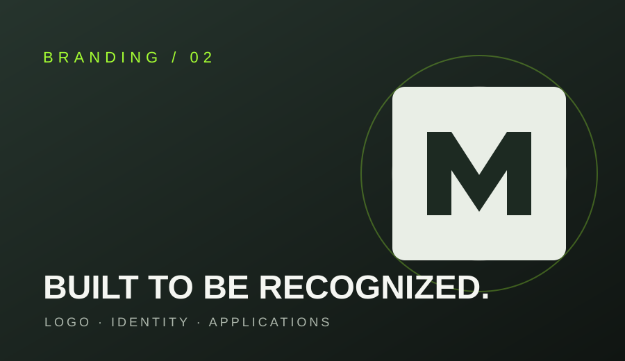
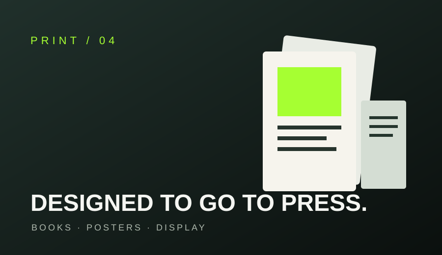

Designing Ideas
Into Visual Identity.
Graphic designer with 4 years of experience, creating distinctive visuals for brands, apparel and digital platforms.
I turn ideas into clear, memorable designs — from the first concept to polished, production-ready artwork.

DESIGNER AT WORK ✳A Creative Mind.
A Practical Approach.
I’m a passionate and creative Graphic Designer with over 4 years of experience in the design industry, specializing in creating unique visual concepts, impactful designs, and creative solutions that help brands express their identity and stand out from the competition.
Throughout my 4 years of experience, I have explored different creative fields, developed my artistic skills, and gained valuable experience in transforming ideas into meaningful visual experiences. My work covers a wide range of design disciplines, including branding, visual identity, typography, social media design, advertising, fashion graphics, and print production.
I believe that great design is not just about making things look attractive; it’s about communicating the right message, telling a story, and creating a memorable connection between a brand and its audience.
Over the years, I have worked on various creative projects, always focusing on details, creativity, quality, and consistency. I enjoy experimenting with different styles, exploring new ideas, and finding the perfect balance between creativity and functionality.
I consider myself a motivated, detail-oriented, and ambitious designer who is always looking to learn, improve, and push creative boundaries. I’m passionate about turning ideas into reality and bringing every project to life with a unique creative perspective.
My goal is to create meaningful designs, build strong visual identities, and deliver creative solutions that leave a lasting impression.
Work that makes
an impression.
Explore selected creative fields and discover how each project gets its own visual language.

Apparel & T-Shirt Graphics
Wearable graphics, hoodie concepts, and fashion visuals designed to give every collection its own character.

Brand Identity & Logo Design
Distinctive logos, visual systems, and brand applications that build recognition and keep every touchpoint consistent.
Social Media Design
Campaign creatives, engaging posts, and digital content crafted to capture attention and communicate clearly.

Printing & Print Design
Editorial layouts, packaging, promotional materials, and carefully prepared artwork ready for production.
Creative skills.
Real outcomes.
From brief to final artwork.
A clear process keeps every project focused, collaborative and consistent.
Discover
Understand your goals, audience and vision.
Concept
Build a visual direction that fits the brief.
Design
Refine the details and bring the idea to life.
Deliver
Prepare polished files ready for use.
Have an idea in mind?
Let's make it stand out.
Have a project or a collaboration in mind? Let's talk.